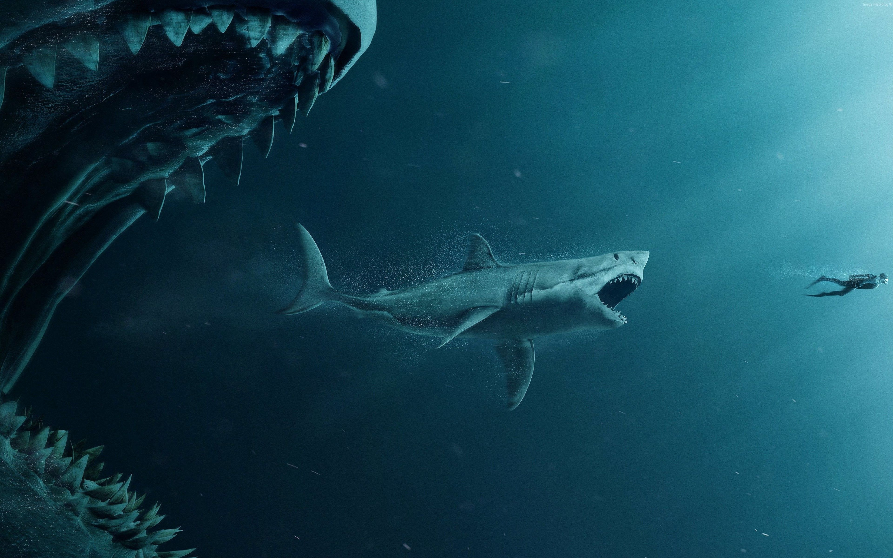

MEGALODÓN

¿Qué es el Megalodón?
El megalodón o megalodonte es una especie acuatica extinta de tiburón que vivió entre hace 19,8 y 2,6 millones de años, aproximadamente, durante el Cenozoico.
Anteriormente se pensaba que era miembro de la familia Lamnidae y pariente cercano del gran tiburón blanco.in embargo, actualmente existe un consenso casi unánime de que pertenece a la familia extinta Otodontidae, que se separó de la ascendencia del gran tiburón blanco durante el Cretácico temprano.
Caracteristicas del Megalodón
Tenía un cuerpo robusto y corpulento, recientes estudios afirman que llegaba hasta los 20 metros de longitud y alcanzaba las 50 toneladas de peso.
Su boca de 2 metros de ancho estaba equipada con un sinnúmero de robustos dientes triangulares con bordes aserrados que median alrededor de 18 cm de longitud ordenados por varias hileras, eran muy efectivos para cortar, desgarrar y arrancar la carne de sus presas, lo que no cabe duda que estas últimas morían ensangrentadas. Todas su extremidades eran bastante largas por lo que le proporcionaba gran rapidez.
Sus letales mandíbulas ejercían una presión de mordida máxima de 182.201 newtons (8 veces superior que la del gran tiburón blanco) dándole la fuerza de mordida más potente de cualquier animal que haya existido jamás, Cabe destacar que con semejantes magnitudes, hubiera podido aplastar un automóvil compacto.